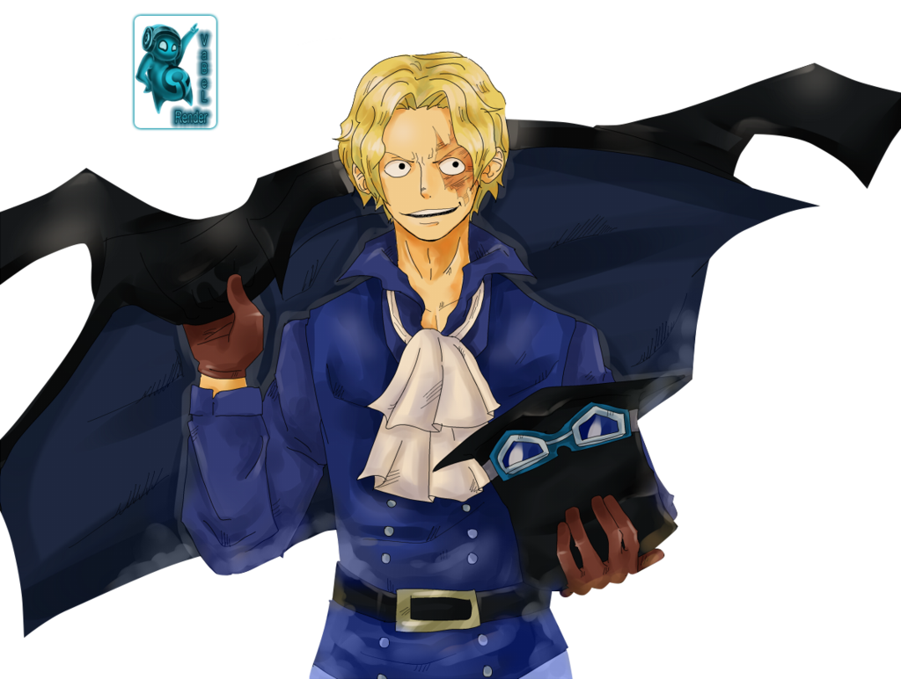
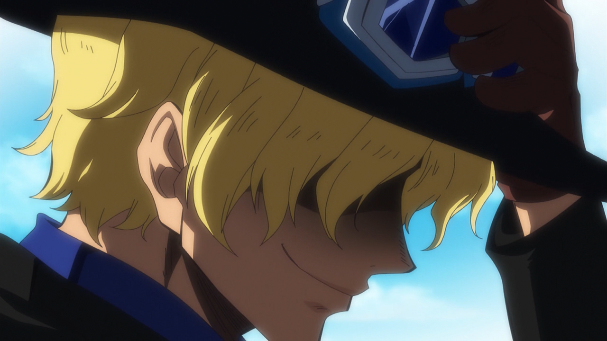
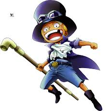
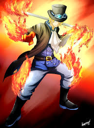
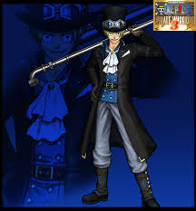
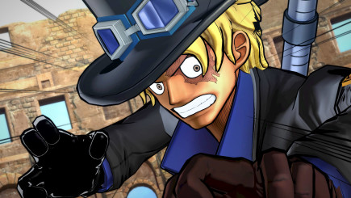

Sabo is the Revolutionary Army's chief of staff, recognized as the "No. 2" of the entire organization, ranking directly under Monkey D. Dragon himself.[2] Next to being the sworn brother of Monkey D. Luffy and Portgas D. Ace, he is of noble descent, the son of Outlook III, as well as via his parents the adopted brother of Stelly, the current king of the Goa Kingdom, whom Sabo has never recognized as such.
|  |  | ||
|  |  |  |  |